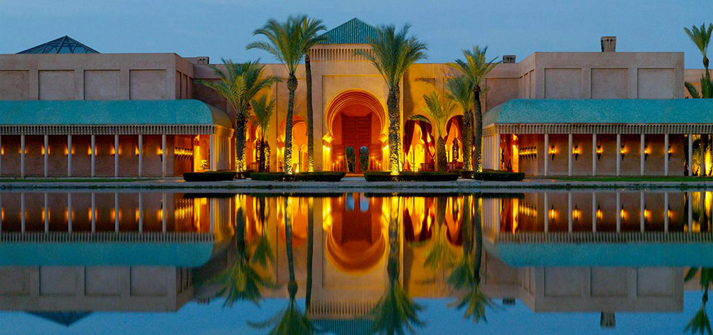

Maroc
Profitez d'un voyage au Maroc pour découvrir cet incroyable pays carrefour entre l'Europe et l'Afrique. Le Maroc distille un charme puissant, pétri de modernité et de tradition. Des montagnes enneigées de l'Atlas aux plaines arides du grand sud, des plages de la côte atlantique aux cités impériales de Marrakech, Fès, essaouira ou Agadir, le Maroc recèle un patrimoine naturel et architectural hors du commun. Riche et savoureuse, la gastronomie marocaine est à l'image du pays... Un des plus beaux pays du monde, aux dires des grands voyageurs ! On ne fait jamais qu'un voyage au Maroc.